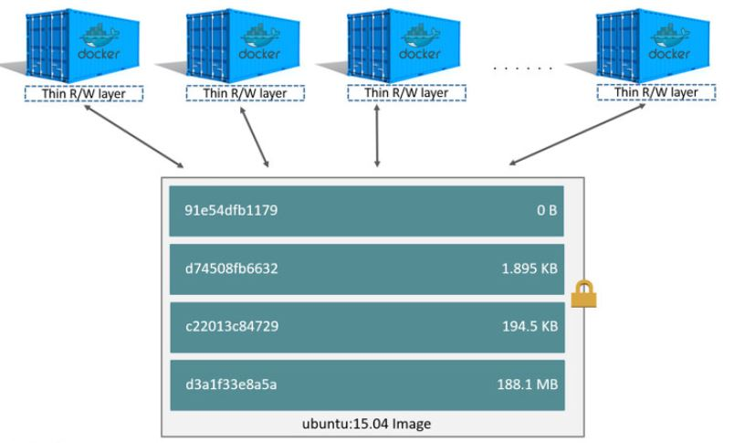

개요
이 문서는 도커 이미지를 이용하여 Altibase 컨테이너를 생성하여 서비스 하기 위한 가이드이다.
이 문서에서는 도커 19.03.2 버전을 기준으로 Altibase 도커 이미지를 생성하고 컨테이너를 생성하여 서비스하는 방법에 대해 기술한다.
- Altibase 7.1.1 이상
- Docker 19.03.2 이상
도커 개요
도커는 Docker.Inc에서 제공하는 컨테이너 기반의 오픈소스 가상 플랫폼이다.
도커 기술은 Linux 커널과 함께 Cgroups 및 네임스페이스와 같은 커널의 기능을 사용하여 프로세스를 분리함으로써 독립적으로 실행될 수 있도록 해 주며 컨테이너를 실행하는 기능 뿐만 아니라 컨테이너 생성 및 구축, 이미지 전송, 이미지 버전 관리 프로세스를 용이하게 해 준다.
이는 가상화 기술의 하나이지만 기존 가상머신과 비교시 게스트 OS가 필요없고 프로세스 단위로 격리되어 필요한 만큼만 CPU, 메모리 등을 사용함으로써 가상화로 인한 손실이 거의 발생되지 않는다.
• 도커와 가상머신의 구조 비교
자료출처 : https://www.docker.com/resources/what-container
도커에서 중요한 개념은 이미지와 컨테이너이다.
• 이미지 :컨테이너 실행에 필요한 파일과 설정값등을 포함하고 있는 것으로 변하지 않는다
베이스 이미지 : 리눅스 배포판의 기본 파일만 설치된 파일이다.
도커 이미지 : 베이스 이미지에 필요한 프로그램과 라이브러리, 소스를 설치한 뒤 파일 하나로 만든 것이다.
이 문서에서 이미지라 함은 베이스 이미지에 Altibase 데이터베이스와 필요한 라이브러리를 설치한 뒤 파일 하나로 만든 도커 이미지를 의미한다.
• 컨테이너 : 이미지를 실행한 상태로 추가되거나 변경되는 값은 모두 컨테이너에 저장된다.
즉, 동일한 이미지로 다중 컨테이너를 만들경우 하부 이미지에 대한 접근은 공유하나 각각의 컨테이너는 각자의 데이터를 가지고 있게된다.
• 이미지와 컨테이너의 관계

자료출처 : https://docs.docker.com
도커 설치
- 이 문서에서는 ubuntu 리눅스에 설치하는 방법을 기준으로 한다.
ubuntu나 centos가 아닌 경우는 도커 설치페이지를 참고로 하여 설치하도록 한다. - 도커를 실행하기 위한 커널버전은 3.10.X 이상이다.
- 도커는 root권한이 필요하다. root가 아닌 사용자가 sudo 없이 사용하려면 docker 그룹에 해당 사용자를 추가한다
1 도커 설치
도커는 리눅스 배포판의 종류에 따라 도커 패키지를 설치해 주는 스크립트를 제공한다.
# sudo wget -qO- http://get.docker.com/ | sh 또는 # curl -fsSL https://get.docker.com/ | sudo sh
2 도커 설치 확인
설치가 완료되면 docker version을 이용하여 확인 가능하다.
# docker version Client: Docker Engine - Community Version: 19.03.2 API version: 1.40 Go version: go1.12.8 Git commit: 6a30dfc Built: Thu Aug 29 05:29:11 2019 OS/Arch: linux/amd64 Experimental: false Server: Docker Engine - Community Engine: Version: 19.03.2 API version: 1.40 (minimum version 1.12) Go version: go1.12.8 Git commit: 6a30dfc Built: Thu Aug 29 05:27:45 2019 OS/Arch: linux/amd64 Experimental: false containerd: Version: 1.2.6 GitCommit: 894b81a4b802e4eb2a91d1ce216b8817763c29fb runc: Version: 1.0.0-rc8 GitCommit: 425e105d5a03fabd737a126ad93d62a9eeede87f docker-init: Version: 0.18.0 GitCommit: fec3683
Altibase 도커 이미지
- Altibase 도커 이미지는 Altibase에서 제공하는 이미지를 사용할 수도 있고 사용자가 만들어서 사용할 수 있다.
Altibase 도커 이미지 다운로드
Altibase에서 제공하는 도커 이미지는 도커허브에서 다운로드 할 수도 있고 docker pull 명령어를 사용하여 다운로드 할 수 있다.
docker pull 명령어를 통해서 ALTIBASE 도커 이미지를 다운로드 받는 방법은 다음과 같다
# docker pull altibase/altibase Using default tag: latest latest: Pulling from altibase/altibase aeb7866da422: Pull complete 749a3f8d8b66: Pull complete ... f061f1a62f9a: Pull complete Digest: sha256:089a461f2b033d2c63c04d75cba78fe8e2ca9a75352e195f0199a17532305d17 Status: Downloaded newer image for altibase/altibase:latest docker.io/altibase/altibase:latest # docker images REPOSITORY TAG IMAGE ID CREATED SIZE ubuntu 18.04 cf0f3ca922e0 4 days ago 64.2MB ... altibase/altibase latest 3f217948f26d 10 months ago 1.06GB
Altibase 도커 이미지 만들기
사용자가 Altibase 도커 이미지를 만드는 방법은 다음과 같다.
1. Altibase 설치
- Altibase 도커 이미지를 만들기 위해서는 먼저 Altibase가 설치되어 있어야 한다.
- Altibase 설치에 대한 가이드는 Altibase 설치 매뉴얼을 참조한다.
2. 도커 파일 구성
- 도커파일은 이미지에 패키지나 데이터를 추가하는 방법을 담고 있는 명령어 집합이다.
도커파일의 이름은 Dockerfile이며 Build시점에 Dockerfile의 경로를 지정해 주어야 한다.
FROM ubuntu:18.04 MAINTAINER ALTIBASE RUN sed -e '56 i\root\t\t soft\t nofile\t\t 1048576 \nroot\t\t hard\t nofile\t\t 1048576 \nroot\t\t soft\t nproc\t\t unlimited \nroot\t\t hard\t nproc\t\t unlimited \n' -i /etc/security/limits.conf; \ echo "vm.swappiness = 1" >> /etc/sysctl.conf; \ echo "kernel.sem = 20000 32000 512 5029" >> /etc/sysctl.conf; WORKDIR /home/altibase COPY set_altibase.env /home/altibase COPY docker-entrypoint.sh /home/altibase COPY ./altibase_home /home/altibase/altibase_home EXPOSE 20300 30300 30310 ENTRYPOINT ["/bin/bash", "/home/altibase/docker-entrypoint.sh"]
3. 초기화 스크립트 작성
- 도커 파일에 정의된 ENTRYPOINT는 컨테이너가 시작되었을 때 실행할 스크립트 혹은 명령이다.
이 문서에서 도커 파일에서 사용되는 스크립트는 환경설정을 위한 set_altibase.env 와 실행 스크립트인 docker-entrypoint.sh 이다.
1. docker-entrypoint.sh 작성 예#!/bin/bash . ./set_altibase.env #export ALTIBASE_MEM_MAX_DB_SIZE=${MEM_MAX_DB_SIZE} export FILE=${FILE} if [[ "${USER_ID}" == "" ]] then USER_ID=sys USER_PASSWD=manager fi function db_create() { ADMIN="${ALTIBASE_HOME}/bin/isql -u sys -p MANAGER -sysdba -noprompt" ${ADMIN} << EOF startup process; CREATE DATABASE mydb INITSIZE=${DB_SIZE}M NOARCHIVELOG CHARACTER SET ${DB_CHARSET} NATIONAL CHARACTER SET ${NATIONAL_CHARSET}; shutdown abort; quit EOF } function db_start_daemon() { altibase -n } function set_replication_port_no() { if [[ "${MODE}" == "replication" ]] then cd $ALTIBASE_HOME/conf sed -e "s/REPLICATION_PORT_NO = 0/REPLICATION_PORT_NO = $SLAVE_REP_PORT/g" altibase.properties > temp.file mv temp.file altibase.properties cd $HOME else if [[ "${MASTER_REP_PORT}" != "" ]] then cd $ALTIBASE_HOME/conf sed -e "s/REPLICATION_PORT_NO = 0/REPLICATION_PORT_NO = $MASTER_REP_PORT/g" altibase.properties > temp.file mv temp.file altibase.properties cd $HOME fi fi } if [[ "${MODE}" == "daemon" ]] then if [[ ! -f "${ALTIBASE_HOME}/dbs/system001.dbf" ]] then set_replication_port_no echo "run altibase with db create" db_create if [[ ! -f "${FILE}" ]] then echo "run altibase without script" else echo "run altibase with create object" is -silent -u ${USER_ID} -p ${USER_PASSWD} -f ${FILE} server stop fi db_start_daemon else if [[ ! -f "${FILE}" ]] then echo "run altibase without script" else echo "run altibase with create object" is -silent -u ${USER_ID} -p ${USER_PASSWD} -f ${FILE} server stop fi echo "run altibase without db create" db_start_daemon fi elif [[ "${MODE}" == "isql" ]] then set_replication_port_no if [[ ! -f "${ALTIBASE_HOME}/dbs/system001.dbf" ]] then db_create server start isql -u ${USER_ID} -p ${USER_PASSWD} -s localhost else server start isql -u ${USER_ID} -p ${USER_PASSWD} -s localhost fi elif [[ "${MODE}" == "shell" ]] then set_replication_port_no if [[ ! -f "${ALTIBASE_HOME}/dbs/system001.dbf" ]] then db_create server start if [[ ! -f "${FILE}" ]] then /bin/bash else is -silent -f ${FILE} /bin/bash fi else server start if [[ ! -f "${FILE}" ]] then /bin/bash else isql -silent -u ${USER_ID} -p ${USER_PASSWD} -s localhost -f ${FILE} /bin/bash fi fi elif [[ "${MODE}" == "replication" ]] then set_replication_port_no if [[ ! -f "${ALTIBASE_HOME}/dbs/system001.dbf" ]] then db_create server start if [[ ! -f "${FILE}" ]] then /bin/bash else is -silent -f ${FILE} /bin/bash fi else server start if [[ ! -f "${FILE}" ]] then /bin/bash else isql -silent -u ${USER_ID} -p ${USER_PASSWD} -s localhost -f ${FILE} /bin/bash fi fi fi
2. set_altibase.env 작성 예set +u ## if unbound variable error is occured. export HOSTNAME=`hostname` export LOGNAME=$LOGNAME WHOAMI="who am i" export JAVA_HOME= ############# # BASE PATHs ############# if [ "$BASE_PATH" == "" ]; then export BASE_PATH=$PATH; fi if [ "$BASE_LIB_PATH" == "" ]; then export BASE_LIB_PATH=$LD_LIBRARY_PATH; fi if [ "$BASE_CLASSPATH" == "" ]; then export BASE_CLASSPATH=$CLASSPATH; fi export PATH=$BASE_PATH export LD_LIBRARY_PATH=$BASE_LIB_PATH export CLASSPATH=$BASE_CLASSPATH ############# # BASIC ############# export HOSTNAME=`hostname` export OS=`uname` ######################################################### # PROMPT ######################################################### export PS1="\[\033[31m\]\u@\h:\w\$ \[\033[0m\]" umask 0000 export LANG=C ################################ # OS: LINUX ES60+ ################################ export OS_NAME=linux export PATH=/usr/local/bin:/usr/bin:/bin:/sbin:$PATH export LD_LIBRARY_PATH=/usr/local/lib:/usr/lib:/lib:$LD_LIBRARY_PATH ## JAVA ## export PATH=${JAVA_HOME}/bin:${PATH} export CLASSPATH=${JAVA_HOME}/lib:${JAVA_HOME}/jre/lib:$CLASSPATH ############# # ALTIBASE ############# export MALOC_ARENA_MAX=4 export ALTIBASE_HOME=/home/altibase/altibase_home export ALTIBASE_NLS_USE=MS949 export ALTIBASE_PORT_NO=20300 #20300,41001 export ALTIBASE_MSG=${HOME}/altimsg export ALTIBASE_LINKER_SQLLEN_SIZE=4 # SET 8 for rp5470 export DB_SIZE=10 #init Memory DB Size (Mbyte) #export MEM_MAX_DB_SIZE=4G export DB_CHARSET=MS949 export NATIONAL_CHARSET=UTF8 ############# # PATHS ############# #aPath=.:$HOME/app/scripts/bin aPath=.:$HOME/app/bin aPath=$aPath:${ALTIBASE_HOME}/bin export PATH=$aPath:$UNIXODBC_HOME/bin:${PATH} aLibPath=. aLibPath=$aLibPath:${ALTIBASE_HOME}/lib export LD_LIBRARY_PATH=$aLibPath:${LD_LIBRARY_PATH} export LD_LIBRARY_PATH_64=${LD_LIBRARY_PATH} export SHLIB_PATH=${LD_LIBRARY_PATH} export CLASSPATH=.:${ALTIBASE_HOME}/lib/Altibase.jar:${CLASSPATH} alias ls='ls -CF' alias ll='ls -l' alias lsd='ls -d */' alias plist='ps -ef | grep $LOGNAME'
4. 도커 이미지 생성
도커 이미지는 docker build를 사용하여 생성한다.
docker build [OPTIONS] PATH | URL | - OPTIONIS : --force-rm Always remove intermediate containers --no-cache Do not use cache when building the image --pull Always attempt to pull a newer version of the image -q, --quiet Suppress the build output and print image ID on success --rm Remove intermediate containers after a successful build (default true) -t, --tag list Name and optionally a tag in the 'name:tag' formatOPTIONS에 대한 좀 더 자세한 내용은 여기에서 확인할 수 있다.
# docker build -t altitest:0.0 ./ Sending build context to Docker daemon 721.7MB Step 1/12 : FROM ubuntu:18.04 ---> cf0f3ca922e0 Step 2/12 : MAINTAINER JEONG ---> Running in 20b8a511ef81 Removing intermediate container 20b8a511ef81 ---> f7b43fc90f83 Step 3/12 : RUN useradd -d /home/altibase -s /bin/bash -m altibase; sed -e '56 i\altibase\t\t soft\t nofile\t\t 1048576 \naltibase\t\t hard\t nofile\t\t 1048576 \naltibase\t\t soft\t nproc\t\t unlimited \naltibase\t\t hard\t nproc\t\t unlimited \n' -i /etc/security/limits.conf; echo "vm.swappiness = 1" >> /etc/sysctl.conf; echo "kernel.sem = 20000 32000 512 5029" >> /etc/sysctl.conf; ---> Running in 88b3e8fa9508 Removing intermediate container 88b3e8fa9508 ---> dc1994514a5f Step 4/12 : COPY set_altibase.env /home/altibase ---> a039fabb1003 Step 5/12 : COPY docker-entrypoint.sh /home/altibase ---> 3ee3d3eda79b Step 6/12 : COPY altibase_home /home/altibase/altibase_home ---> bafec9edb96b Step 7/12 : RUN chown -R altibase:altibase /home/altibase/* ---> Running in f1913e2d7e32 Removing intermediate container f1913e2d7e32 ---> e4d56135882f Step 8/12 : USER altibase ---> Running in a1e4f2b96ee3 Removing intermediate container a1e4f2b96ee3 ---> aad721f27620 Step 9/12 : WORKDIR /home/altibase ---> Running in 4081c1fcc20a Removing intermediate container 4081c1fcc20a ---> b8f3497fc294 Step 10/12 : ENV MODE shell ---> Running in 9167fee80677 Removing intermediate container 9167fee80677 ---> af201a060152 Step 11/12 : EXPOSE 20300 30300 ---> Running in ff0db6b12515 Removing intermediate container ff0db6b12515 ---> 7a1727561c45 Step 12/12 : ENTRYPOINT ["/bin/bash", "/home/altibase/docker-entrypoint.sh"] ---> Running in 1eeccd7174e9 Removing intermediate container 1eeccd7174e9 ---> 275b96f6ba53 Successfully built 275b96f6ba53 Successfully tagged altitest:0.0
Altibase 서비스 컨테이너 생성
컨테이너 생성
도커이미지로 컨테이너를 생성할 때는 docker run을 사용한다.
docker run [OPTIONS] IMAGE[:TAG|@DIGEST] [COMMAND] [ARG...] OPTIONIS : -a, --attach list Attach to STDIN, STDOUT or STDERR --cpus decimal Number of CPUs -m, --memory bytes Memory limit -d, --detach Run container in background and print container ID -e, --env list Set environment variables --env-file list Read in a file of environment variables -i, --interactive Keep STDIN open even if not attached --privileged Give extended privileges to this container -t, --tty Allocate a pseudo-TTY -u, --user string Username or UID (format: <name|uid>[:<group|gid>]) -v, --volume list Bind mount a volume -w, --workdir string Working directory inside the containerOPTION에 대한 좀 더 자세한 내용은 여기에서 확인할 수 있다.
1. 컨테이너 생성
컨테이너 생성을 위해서는 다음과 같이 사용한다.
# docker run -it -e MODE=shell --name altibase_test altitest:0.0 bash ----------------------------------------------------------------- Altibase Client Query utility. Release Version 7.1.0.1.0 Copyright 2000, ALTIBASE Corporation or its subsidiaries. All Rights Reserved. ----------------------------------------------------------------- ISQL_CONNECTION = UNIX, SERVER = localhost [ERR-910FB : Connected to idle instance] Connecting to the DB server.... Connected. TRANSITION TO PHASE : PROCESS Command executed successfully. DB Info (Page Size = 32768) (Page Count = 257) (Total DB Size = 8421376) (DB File Size = 1073741824) Creating MMDB FILES [SUCCESS] Creating Catalog Tables [SUCCESS] Creating DRDB FILES [SUCCESS] [SM] Rebuilding Indices [Total Count:0] [SUCCESS] ... <이하 생략> ... # ls altibase_home docker-entrypoint.sh set_altibase.env필수 옵션 -e MODE daemon Altibase 데이터베이스를 데몬으로 실행하고 터미널을 유지한다. isql Altibase 데이터베이스를 실행하고 컨테이너 내부에서 isql에 접속한 상태를 유지한다. shell Altibase 데이터베이스를 실행하고 컨테이너 내부에서 shell에 접속한 상태를 유지한다. replication 이중화 연결을 위한 추가 노드 생성시에 사용한다. 마스터 노드 생성시에는 이 옵션을 선택하지 않는다.
2. 외부 볼륨 연결
도커는 컨테이너 계층에 변경된 데이터를 저장하게 되며 이 데이터는 컨테이너가 삭제되면 데이터도 같이 삭제된다.
따라서 데이터의 영속성을 보장하기 위하여 호스트의 파일시스템을 컨테이너에 마운트하는 방식의 데이터 볼륨을 사용한다.
데이터 볼륨의 특징은 다음과 같다.
- 데이터 볼륨은 재사용이 가능하며 컨테이너 간의 공유가 가능하다.
- 데이터 볼륨은 호스트에서 직접 접근이 가능하다.
데이터 볼륨은 기본적으로 컨테이너와 독립적으로 운영되기 때문에 컨테이너가 삭제되어도 계속 유지된다
데이터 볼륨을 지정하는 방법은 다음과 같다.-v [host directory path]:[container directory path] 또는 --mount type=[OPTIONS],source=[host directory path],target=[container directory path]
# docker run -it --name altibase_test \ --privileged \ -v ~/work/ALTIBASE_DBS:/home/altibase/altibase_home/dbs \ -v ~/work/ALTIBASE_LOGS:/home/altibase/altibase_home/logs \ altitest:0.0 /bin/bash
컨테이너 간 이중화 연결
- Altibase 이중화
운영중인 데이터베이스의 로그를 다른 데이터베이스로 전송하여 재실행함으로써 양쪽 데이터 베이스에 같은 데이터를 유지하게 함으로써 서버의 예기치 않은 종료가 발생했을 때 대체 서버를 이용하여 서비스를 재개할 수 있는 무정지 운영 환경을 제공하는 기능이다.
이중화에 대한 매뉴얼은 여기에서 확인할 수 있다. - 컨테이너 간의 이중화 연결 순서.
1. 이중화 연결을 위한 하나의 도커 네트워크를 생성한다.
2. 마스터 노드의 컨테이너를 생성된 도커 네트워크에 조인한다.
3. 추가할 노드의 컨테이너를 마스터 노드와 동일한 도커 네트워크에 조인한다. 컨테이너 간의 이중화 연결
1. 도커 네트워크 생성.
도커 네트워크는 docker network create 명령어로 생성한다
생성된 네트워크는 docker network ls 명령어로 확인할 수 있으며 상세한 내용은 docker inspect 명령어로 확인 가능하다docker network create [OPTIONS] NETWORK OPTIONIS : --attachable Enable manual container attachment --config-from string The network from which copying the configuration -d, --driver string Driver to manage the Network (default "bridge") --ipv6 Enable IPv6 networking --label list Set metadata on a network docker inspect [OPTIONS] NAME|ID [NAME|ID...] OPTIONIS : --format , -f Format the output using the given Go template --size , -s Display total file sizes if the type is container --type Return JSON for specified typeisolated_network란 이름으로 도커 네트워크를 생성한다.
생성된 네트워크는 docker network ls 로 확인한다.
# docker network create --driver bridge isolated_network 2bb4d1dc2fc364ed45e69beb3a8b257f5d0e9cd95b5e4676d819386b32ba88d6 # docker network ls NETWORK ID NAME DRIVER SCOPE 09929baadcff bridge bridge local 1963af1259b9 host host local 2bb4d1dc2fc3 isolated_network bridge local 5f3deeb7fcba none null local
생성된 네트워크에 대한 상세한 내용을 확인한다.# docker inspect 2bb4d1dc2fc3 [ { "Name": "isolated_network", "Id": "2bb4d1dc2fc364ed45e69beb3a8b257f5d0e9cd95b5e4676d819386b32ba88d6", "Created": "2019-10-29T09:50:37.6130865+09:00", "Scope": "local", "Driver": "bridge", "EnableIPv6": false, "IPAM": { "Driver": "default", "Options": {}, "Config": [ { "Subnet": "172.18.0.0/16", "Gateway": "172.18.0.1" } ] }, "Internal": false, "Attachable": false, "Ingress": false, "ConfigFrom": { "Network": "" }, "ConfigOnly": false, "Containers": {}, "Options": {}, "Labels": {} } ]
2. 마스터 노드의 컨테이너를 생성하면서 도커 네트워크에 조인한다# docker run -it \ --net=isolated_network \ --hostname=master \ -e MODE=shell \ -e MASTER_REP_PORT=30300 \ --name altitest_master altitest:0.0 /bin/bash
필수 옵션 --net 컨테이너가 실행될 네트워크 명 --hostname 호스트네임 -e MASTER_REP_PORT 이중화 포트 번호
3. 추가 노드의 컨테이너를 생성하면서 마스터 노드의 도커 네트워크에 조인한다# docker run -it \ --net=isolated_network \ --hostname=slave \ -e MODE=replication \ -e MASTER_HOST_NAME=master -e MASTER_DB_PORT=20300 -e MASTER_REP_PORT=30300 \ -e SLAVE_HOST_NAME=slave -e SLAVE_REP_PORT=30310 \ --name altitest_slave altitest:0.0 /bin/bash altibase
필수 옵션 --net 컨테이너가 실행될 네트워크 명 --hostname 호스트네임 -e MASTER_HOST_NAME 마스터 노드의 호스트네임 -e MASTER_DB_PORT 마스터 노드의 서비스 포트 번호 -e MASTER_REP_PORT 마스터 노드의 이중화 포트 번호 -e SLAVE_HOST_NAME 추가 노드의 호스트네임 -e SLAVE_REP_PORT 추가 노드의 이중화 포트 번호 4 네트워크 정보를 확인한다
# docker inspect 2bb4d1dc2fc3 [ { "Name": "isolated_network", "Id": "2bb4d1dc2fc364ed45e69beb3a8b257f5d0e9cd95b5e4676d819386b32ba88d6", "Created": "2019-10-29T09:50:37.6130865+09:00", "Scope": "local", "Driver": "bridge", "EnableIPv6": false, "IPAM": { "Driver": "default", "Options": {}, "Config": [ { "Subnet": "172.18.0.0/16", "Gateway": "172.18.0.1" } ] }, "Internal": false, "Attachable": false, "Ingress": false, "ConfigFrom": { "Network": "" }, "ConfigOnly": false, "Containers": { "0ac2165ddda455343ba2b374f18575bfc8e39f51c7fdfc80bfa49482c76e79fe": { "Name": "altitest_slave", "EndpointID": "db9c1241f322019764f7af4781c359647ec393bfd29a816433e1c3184546b546", "MacAddress": "02:42:ac:12:00:03", "IPv4Address": "172.18.0.3/16", "IPv6Address": "" }, "964cd5ff922470b9131a23a399029844525aba39eaa500b9f4f3453b902c8461": { "Name": "altitest_master", "EndpointID": "80390d64486a6eabedc5cbf7e3d2fe9886099cae7678da7a9a55ef64a1130bf4", "MacAddress": "02:42:ac:12:00:02", "IPv4Address": "172.18.0.2/16", "IPv6Address": "" } }, "Options": {}, "Labels": {} } ]
Altibase 데이터베이스 구성
- Altibase 데이터베이스를 효과적으로 사용하기 위한 프로퍼티들에 대한 설명 및 설정은 Altibase 설정 가이드를 참조한다.
- Altibase 데이터베이스 구성과 운영을 위한 설명 및 설정은 Altibase 매뉴얼에서 확인할 수 있다.
Altibase 서버 접속
컨테이너 내부에서 Altibase 서버 접속
컨테이너 내부에서 Altibase 서버에 접속할 때는 isql 명령어를 사용한다.
# isql -s localhost -u [사용자 계정] -p [사용자 암호] # isql -s localhost -u sys -p manager ----------------------------------------------------------------- Altibase Client Query utility. Release Version 7.1.0.1.0 Copyright 2000, ALTIBASE Corporation or its subsidiaries. All Rights Reserved. ----------------------------------------------------------------- ISQL_CONNECTION = TCP, SERVER = localhost, PORT_NO = 20300 iSQL>
2. 컨테이너 외부에서 Altibase 서버 접속
- 컨테이너 외부에서 Altibase 서버에 접속하기 위해서는 할당된 IP정보를 확인하여 isql 명령어의 -s 옵션에 해당 IP를 지정해 주어야 한다
IP확인은 docker inspect 명령어로 확인할 수 있다.
# docker ps CONTAINER ID IMAGE COMMAND CREATED STATUS PORTS NAMES dbab08cc5be8 altitest:0.0 "/bin/bash /home/alt…" 18 hours ago Up 18 hours 20300/tcp, 30300/tcp altibase_test 19d325fa6e26 registry "/entrypoint.sh /etc…" 2 days ago Up 2 days 0.0.0.0:5000->5000/tcp local-registry # docker inspect altibase_test [ { "Id": "dbab08cc5be8aac2c005d9f8d1dbc0f0d0569e8c30c59a49fe455cdb06963484", ... }, "NetworkSettings": { "Bridge": "", "SandboxID": "2436fb93d9e66afe8649a482775c95c14870d09dbee367a5ebd59695f98a0854", "HairpinMode": false, "LinkLocalIPv6Address": "", "LinkLocalIPv6PrefixLen": 0, "Ports": { "20300/tcp": null, "30300/tcp": null }, "SandboxKey": "/var/run/docker/netns/2436fb93d9e6", "SecondaryIPAddresses": null, "SecondaryIPv6Addresses": null, "EndpointID": "8c2c73671de5b3a55251313f8bc6b1c376685e59feb3ed55163ab9692f85983d", "Gateway": "172.17.0.1", "GlobalIPv6Address": "", "GlobalIPv6PrefixLen": 0, "IPAddress": "172.17.0.3", "IPPrefixLen": 16, "IPv6Gateway": "", "MacAddress": "02:42:ac:11:00:03", "Networks": { "bridge": { "IPAMConfig": null, "Links": null, "Aliases": null, "NetworkID": "3b3cdc53d9c0e6ad146b6c7bcc8cb60bcef01ba533fee3fd704e5959a1ef573f", "EndpointID": "8c2c73671de5b3a55251313f8bc6b1c376685e59feb3ed55163ab9692f85983d", "Gateway": "172.17.0.1", "IPAddress": "172.17.0.3", "IPPrefixLen": 16, "IPv6Gateway": "", "GlobalIPv6Address": "", "GlobalIPv6PrefixLen": 0, "MacAddress": "02:42:ac:11:00:03", "DriverOpts": null } } } } ]# isql -s [서버 IP] -u [사용자 계정] -p [사용자 암호] # isql -s 172.17.0.3 -u sys -p manager ----------------------------------------------------------------- Altibase Client Query utility. Release Version 7.1.0.1.0 Copyright 2000, ALTIBASE Corporation or its subsidiaries. All Rights Reserved. ----------------------------------------------------------------- ISQL_CONNECTION = TCP, SERVER = 172.17.0.3, PORT_NO = 20300 iSQL>
Altibase 서비스 컨테이너 중지
실행중인 컨테이너를 중지하기 위해서는 docker stop 명령어를 사용한다.
중지된 컨테이너는 삭제된 것은 아니며 docker start 명령어로 다시 실행시킬 수 있다.docker stop [OPTIONS] CONTAINER [CONTAINER...] Options: -t, --time int Seconds to wait for stop before killing it (default 10)# docker stop altibase_test altibase_test
Altibase 서비스 컨테이너 삭제
- 컨테이너를 삭제하기 위해서는 컨테이너가 중지되어 있어야 한다.
- 컨테이너 조회시에는 docker ps 명령어를 사용한다. 중지되어 있는 컨테이너까지 조회시에는 -a 옵션을 추가한다.
중지되어 있는 컨테이너를 삭제하기 위해서는 docker rm 명령어를 사용한다.
docker ps [OPTIONS] OPTIONIS : -a, --all Show all containers (default shows just running) -f, --filter filter Filter output based on conditions provided --format string Pretty-print containers using a Go template -n, --last int Show n last created containers (includes all states) (default -1) -l, --latest Show the latest created container (includes all states) --no-trunc Don't truncate output -q, --quiet Only display numeric IDs -s, --size Display total file sizes docker rm [OPTIONS] CONTAINER [CONTAINER...] OPTIONIS : -f, --force Force the removal of a running container (uses SIGKILL) -l, --link Remove the specified link -v, --volumes Remove the volumes associated with the container# docker ps CONTAINER ID IMAGE COMMAND CREATED STATUS PORTS NAMES 19d325fa6e26 registry "/entrypoint.sh /etc…" 3 days ago Up 3 days 0.0.0.0:5000->5000/tcp local-registry # docker ps -a CONTAINER ID IMAGE COMMAND CREATED STATUS PORTS NAMES dbab08cc5be8 altitest:0.0 "/bin/bash /home/alt…" 19 hours ago Exited (137) 2 minutes ago altibase_test 6074f9f6876a 305569b058db "/bin/sh -c 'apt-get…" 19 hours ago Exited (1) 19 hours ago agitated_dirac 7cd392776788 2c7e9ce62325 "/bin/sh -c 'apt-get…" 20 hours ago Exited (1) 20 hours ago sleepy_shamir 2c835abffa8a 399a593362f0 "/bin/sh -c 'useradd…" 21 hours ago Created great_gould 9f1daafaaf3d 93d6a98de683 "/bin/bash 'useradd …" 2 days ago Exited (127) 2 days ago strange_aryabhata 19d325fa6e26 registry "/entrypoint.sh /etc…" 3 days ago Up 3 days 0.0.0.0:5000->5000/tcp local-registry # docker rm altibase_test altibase_test # docker ps -a CONTAINER ID IMAGE COMMAND CREATED STATUS PORTS NAMES 6074f9f6876a 305569b058db "/bin/sh -c 'apt-get…" 19 hours ago Exited (1) 19 hours ago agitated_dirac 7cd392776788 2c7e9ce62325 "/bin/sh -c 'apt-get…" 20 hours ago Exited (1) 20 hours ago sleepy_shamir 2c835abffa8a 399a593362f0 "/bin/sh -c 'useradd…" 21 hours ago Created great_gould 9f1daafaaf3d 93d6a98de683 "/bin/bash 'useradd …" 2 days ago Exited (127) 2 days ago strange_aryabhata 19d325fa6e26 registry "/entrypoint.sh /etc…" 3 days ago Up 3 days 0.0.0.0:5000->5000/tcp local-registry
참고
Docker Documentation : https://docs.docker.com/
{kind=link}